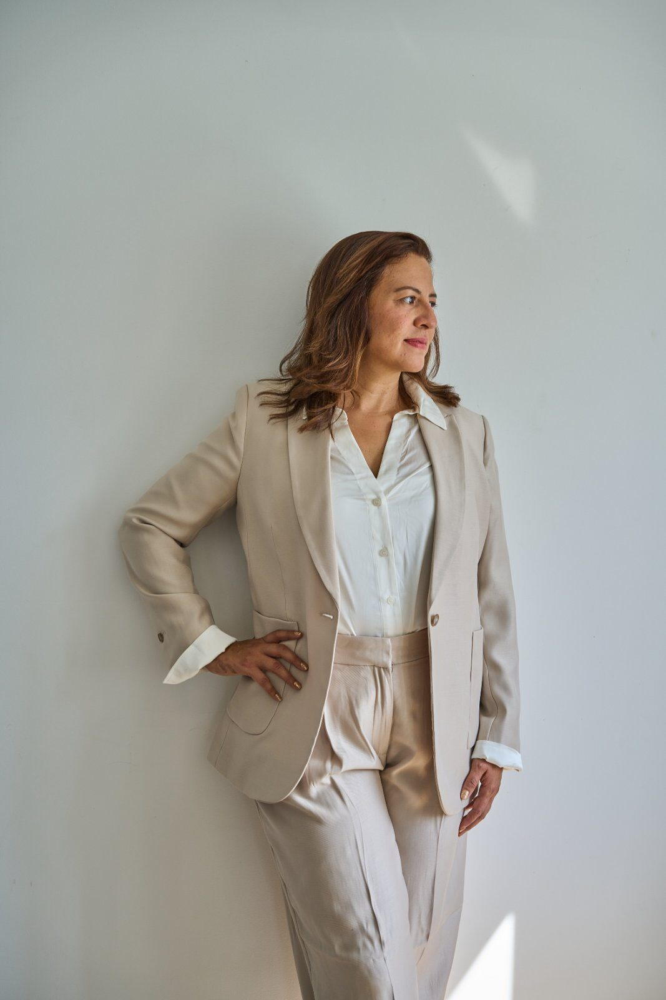

From Caracas to Hannover, from IT to AI
I’m a programme manager with about 20 years in business and IT transformation. I started as a developer in Caracas, led SAP rollouts across Europe for the Continental Group, and now deliver AI-driven transformation as an AI Implementation Architect.
Make technology carry real business load
Many AI projects stop at the demo. Mine are measured against the business goal from day one. I connect the people who own the process with the people who build the system, and I keep both sides working from the same plan.
I work in three steps. First I analyse where the potential is. Then I set a roadmap everyone can see. Then I build a prototype that proves the value before anyone scales it.
Twenty years, one line of work
Each role added one more side to the bridge: development, data, SAP delivery, product, and now AI.
-
2025 — nowFreelance · Hannover
Senior Manager, AI Implementation Projects & Strategy
- Lead potential analysis and roadmap definition for AI-driven transformations.
- Deliver AI prototypes and proofs of concept end to end, with clear ownership of results.
- Apply generative AI tools such as n8n, Make and Visual Studio Code to real business problems.
- Teach AI fundamentals with a focus on business value and concrete use cases.
-
2023 — 2025ContiTech · Hannover
Digital Solutions, Product & Supply Chain Project Manager
- Led product development and operations for the digital solutions portfolio and roadmap.
- Took digital products and e-commerce solutions to market and developed servitisation concepts.
- Ran order-to-delivery processes in SAP SCM against internal SLAs and customer expectations.
-
2018 — 2023Continental AG · Hannover
Project Lead, Process and SAP Implementation
- Led international SAP rollouts in Belgium, Hungary and Germany on the global SAP template.
- Owned change requests, escalation management and test management in SAP Solution Manager.
- Coordinated carve-ins and carve-outs and led a Power BI rollout dashboard for transparency.
-
2013 — 2017Continental AG · Hannover
SAP BI Consultant, Finance and HR IT Controlling
Ran and optimised SAP BW applications for financial controlling and coordinated external consultants in the JUMP Junior Manager Programme.
-
2004 — 2013Caracas · Munich · Gütersloh
Development, data and consulting
- SAP BW ConsultantReply GmbH, Gütersloh · 2012–2013
- Senior Associate, Management ConsultingKPMG AG, Munich · 2011
- System AnalystWincor Nixdorf, Caracas · 2006–2008
- Web AnalystIBM Venezuela, Caracas · 2005–2006
- Business Analyst, Web SystemsJohnson & Johnson de Venezuela · 2004–2005

The next span is strategy
I’m completing the Chief Strategy Officer Executive Programme at INSEAD, alongside my AI Implementation Architect training at the Digital Institut des Mittelstands. The aim is to connect AI delivery with company strategy, not to run it as a side project.
I also want more people in the room who understand AI. I teach AI fundamentals to business and IT teams, and I’m active in Women Techmakers and the AI community in Hannover.
Outside work I’m in the mountains with the German Alpine Club. The habit is the same: read the terrain before you set off.
Tell me where you want to go
I work with mid-sized companies, strategy teams and conference organisers. Message me on LinkedIn about an AI initiative, a transformation programme or a talk.
- LinkedInLinkedIn profile
- Based inHannover, Germany
- LanguagesGerman · English · Spanish